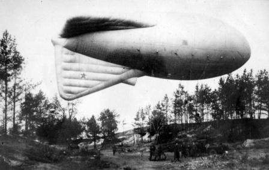
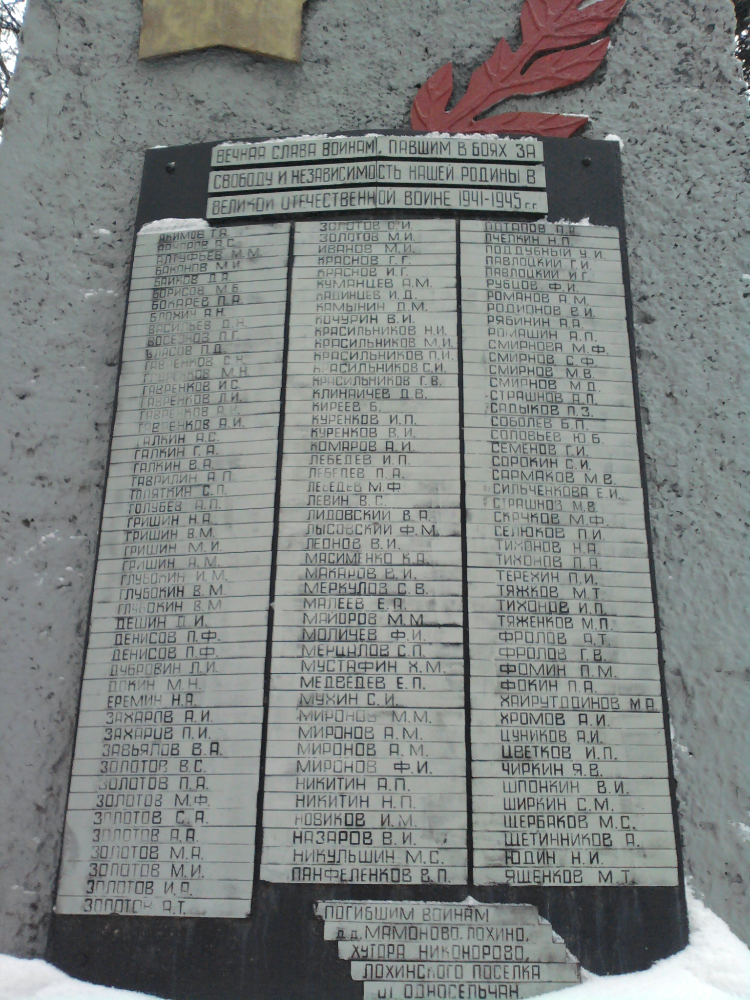

Деревня Лохино
Московская губернияЗвенигородский уездПавловская волость
Обобщенный банк данных «Мемориал» создан по инициативе Министерства обороны Российской Федерации в 2007 году. В настоящее время ОБД «Мемориал» содержит почти 17 млн. цифровых копий документов о безвозвратных потерях и 20 млн. именных записей о потерях Красной Армии в Великой Отечественной войне.

Деревня Лохино стала прифронтовой зоной во время обороны Москвы. Первый налет на Москву произошёл 21 июля в 21-40. По воспоминаниям лохинцев, практически до конца октября около 22-00 начиналась воздушная тревога и все жители отправлялись в бомбоубежище, вырытое на окраине деревни. Во время боев под Москвой в деревне находилась тыловая зона, куда прибывали солдаты и офицеры на пополнение и отдых. В этот период в доме Макаровых проживали офицеры. Бабушка хорошо помнит, как военфельдшер пытался ухаживать за двоюродной сестрой Зиной Карпухиной. На месте бомбоубежища сейчас стоят дома «Садоводческих товариществ». В овраге, близ поселка Трехгорка несли боевую службу части ПВО. В первые дни налетов для обнаружения немецких самолётов использовались морские прожектора. Но из-за демаскировки местности, они были немедленно сняты. При приближении фронта к Москве, около деревни расположили техническую часть одной из дивизий и вскоре после этого по ней был нанесен авиационный удар. Во время авиаудара сама деревня практически не пострадала, лишь дом Блохиных, стоявший напротив Макаровых загорелся в результате попадания зажигательной бомбы. Во время воздушных тревог Гаврила Иванович Макаров оставался в деревне на случай предотвращения возгорания жилых домой и сараев с животными. Это хорошо запомнила бабушка Женя. Лес, окружавший деревню во время войны, практически весь был вырублен из-за острой нехватки дров. В декабре в результате контр-наступления Красной Армии немецкие войска были отброшены и линия фронта отдалилась от деревни на многие километры. Война не прошла бесследно для жителей деревни, многие сельчане пали на фронтах Великой Отечественной Войны.

{kind=link}
Страшнов Алексей Иванович (1924 — 2001)
{kind=link}
{kind=link}
Дядя Лёша, как мы его называли в детстве, а служил он в пехоте. Это мы знали из рассказов нашего дедушки. Еще мы знали, что он был ранен и летом можно было разглядеть на его спине шрам от осколка. Вот и все скудные данные о дяде Лёше. Теперь у нас есть возможность восстановить боевой путь нашего земляка, что мы и делаем в этом разделе. Страшнов Алексей Иванович воевал в 310 стрелковой дивизии 1082 стрелковом полку. Дивизия вела бои на Ленинградском фронте. В начале 1944 года Алексей Страшнов был ранен, эвакуирован в госпиталь №1116. После излечения (01.05.1944) был направлен 47-й запасной артиллерийский полк 36-й запасной стрелковой бригады. В 1945 получил очередное ранение, после которого был признан негодным к строевой службе.
Козлов Сергей Афанасьевич (? — 06.08.1943)
Гвардии красноармеец 2-ой воздушно-десантной дивизии (4 гв.полк). Погиб 06.08.1943 в районе деревни Бельдяшкино Орловской области. Извещение о гибели Сергея было направлено Марии Афанасьевне Козловой. Кем она приходилась павшему - мы не знаем.
Хохлов Константин Алексеевич (? — 12.7.1941)
{kind=link}
{kind=link}
Командир взвода (младший лейтенант)
4 полк ВНОС 3 дивизии ПВО
Убит в бою 12.7.1941 в районе посёлка Бородянка. Похоронен в посёлке Бородянка Киевской
области.
Основание: перенесено из книги безвозвратных потерь от 18.7.1941
Жена: Александра Васильевна Хохлова
Ромашковский сельсовет Кунцевский р-н Моск.область.
Куренков Александр Иванович (20.08.1902 — 1942)
Двоюродный брат Василия Ивановича Куренкова, призван 21.08.1941 года Кунцевским РВК. Рядовой Куренков воевал в составе 175 мотострелкового полка (3 батальон) 1-й гвардейской Пролетарской Московской Краснознаменной мотострелковой дивизии. Связь с ним прекратилась с 17.12.1941 года. Родители: Иван Васильевич и Наталия Алексеевна Куренковы. Дом №13.
Куренков Василий Иванович (? — 1942)
Красноармеец отдельного минометного дивизиона 2-й Гвардейской мотострелковой дивизии. Погиб в ожесточенных боях подо Ржевом 10 сентября 1942 года. Похоронен на левом берегу реки Волга у деревни Знаменское Ржевского района. До войны проживал в доме №10, мать Устинья Ивановна.
Сидорочев Иван Кузьмич
{kind=link}
Офицер.
Сидорычев Василий Кузьмич (6.12.1910 — 11.08.1942)
{kind=link}
{kind=link}
{kind=link}
Майор, член ВКП(б), начальник 3-го отдела штаба 346 стрелковой дивизии. Кадровый офицер. В рядах РККА с 1933 года, участник Советско-финской войны 1939-1940 гг. В 1940 году закончил Военную Электротехническую Академию (1940г.). Работал преподавателем в Ульяновском военном училище связи. с 6.1.1942 начальник связи 346 СД, командир батальона. Числится без вести пропавшим с 11.08.1942 года.
Еремин Владимир Дмитриевич (1901 — 08.10.1944)

Родился 8 июня 1901 года в деревне Лохино в семье крестьян-батраков. Окончил 1 класс сельской школы села Архангельское в 1910 г. Работал шпульщиком. В июне 1920 г. вступил в ряды Красной Армии (2-я Красная Бригада г. Омск). В сентябре 1921 г. поступил на черноморские пехотные курсы У.В.О. Далее в 64-е пехотные курсы У.В.О (1922). В 1923 г. в Феодосийскую пехотную академию (г. Киев). В 1936 г. присвоено звание капитан. Кандидат в ВКП(б) с 1938. Член ВКП(б) с 1940 г. (майор). В 1943 г. закончил АКТУС им. Сталина. Подполковник с 17.11.1943. Полковник с 25.09.1944, командир 13-го отдельного гвардейского полка тяжёлых танков (ИС-1) 10 Танкового корпуса 4 Танковой Армии 2-го Прибалтийского фронта. Погиб в бою 07.10.1944.
Курнаков Борис Георгиевич
{kind=link}
Офицер.
Курнаков Николай Дмитриевич (1916 — 1970)

Механик самолета 2 эксадрильи 716-й ночного ближнебомбардировочного авиационного Киркенесского полка. Воевал с февраля 1943 года по июнь 1944 года на Свирском оборонительном рубеже, обеспечивая материальной частью самолеты полка. Участник войны с Японией. Награжден медалью «За Боевые Заслуги», «За Оборону Советского Заполярья», «За Победу над Германией», «За Победу на Японией».
Макаров Сергей Васильевич (1911 — 1943)
{kind=link}
{kind=link}
Старший сын Василия Ивановича Макарова, двоюродный брат бабушки Жени. Спортсмен, боксер, коммунист (член ВКП(б) с 1935 г.), командир Красной Армии. Его биография стала нам знакома лишь со слов племянницы Шаденко Елены Михайловны. Высокий, красивый, смелый и решительный молодой человек. Воевал командиром (ст.лейтенант) минометного взовода в составе 83-й Гвардейской Стрелковой Дивизии. Прошёл боевой путь от Москвы до Витебска. Погиб 16 декабря 1943 г. в боях за г. Городок. Награжден орденом «Красная звезда».
Макаров Юрий Васильевич (1925 — 1974)

Ушёл добровольцем на фронт в 1943 году. Учился в 1-й Учебной Танковой Бригаде (34-й запасной танковый полк), после окончания обучения (14.07.1944) был направлен на фронт. Дальнейшую службу проходил в составе 1508-й самоходно-артиллерийского полка, во время боёв был контужен. Закончил войну в Берлине в звании младшего сержанта. Награжден медалями «За отвагу» и «За победу над Германией».
Письмо Макарова Сергея Васильевича от 13 сентября 1942 г.
13.09.1942
Здравствуйте всем, папа, мама, Юра.
Привет всем родным и знакомым. Письма я ваши получил от всех троих,
за что бесконечно благодарю. Я доволен так же тем, что вы очень
подробно описали, но только забыли о Курнакове Семене. Мне Аня
писала, что Сеня приказал долго жить, но почему он умер я не знаю. В
такое время никто не должен умирать не принеся Родине какой-нибудь
пользы в деле борьбы против немецких оккупантов против захватчиков,
посягнувших на нашу страну, так вот вы о нем напишите, почему он
умер, а пока живу по старому умирать, и не собираюсь и заставлю
умереть еще много этих чужих пришельцев гадов, а так и мне не грех
умереть, моя бы смерть стоила дорого для немцев, но я все же думаю
еще больше отправить в чудесный загробный мир, а их грязные трупы
положить в 2х аршинную усадьбу и закопать как собак, нет наша собака
лучше чем эти голодные фрицы с гансами, хуже чем шакалы, ну а пока
пишите крепко целую Сергей.
Письмо Макарова Сергея Васильевича от 2 декабря 1942 г.
2.12.1942
Здравствуй Нюра Привет!
Полночь. Начало дня. Получил твое письмо от 24.11.42 за что спасибо. Как видишь
я легок на помине, но вместе с тем я и вообще легок и пишу
в разные места и даже туда куда от меня совершенно не ожидают.
Ты говоришь, что у тебя 18-го была мама и жаловалась, печалилась обо мне
и о том, что якобы я им не пишу. Но у них вообще есть правило
такое что если Сергей пишет то жив и здоров и ладно на этом и хорошо,
а ответ Сергею никак не хотят написать и аккуратный единственный писака, при всех
отрицательных сторонах, это Юрий, который немедленно мне отвечает на все мои письма
регулярно и иной раз не дожидаюсь моего пишет сам.
Твои желания я все же буду выполнять и почаще писать хотя бы
на открыточке. Так для сведения ну в отношении неудачной эвакуации из своего
гнезда. Я им писал, что Миша тут не при чем ибо он близкий родной человек
так и сделал и нужно было сделать именно так. Будь я на его месте я бы
сделал тоже. Мама с батькой не видели тех ужасов тех жерновов войны, которые
я видел и они очень счастливы тем что отделались сравнительно дешево.
А то что наши люди нечестные то это факт. Несмотря на то что
у людей достаточно всего они однако же хотят еще больше, но это не наши люди
и с ними еще рассчитаемся по-нашему, по-советски. Но Миша прав
и я нисколько его не обвиняю, а наоборот даже ему спасибо, они все же
не видели тех бомбежек и т.п. в связи с налетами и разными разговорами,
по крайне мере нервы не переносили тяжести ???
А теперь попутно вторично просматривая твое письмо не первый раз прощаю, что
карандашом написано, то в следующий раз пиши чернилами, а то рябит
в глазах. Видишь я нахожусь в землянке при тусклом свете коптилки,
но все же пищу чернилами??? Я с собою таская в полевой сумке
и где бы ни был пишу чернилами. Ну а теперь тебя быть может интересует
моя жизнь вообще от начало и до сего времени. С Мончегорска я поехал
в Норильск порт Дудинка на Енисее, но в связи некоторых причин нельзя было
проехать через Ледовитый океан, я был направлен в Джидатрест Бурят-Монголии. Тоню
потерял и долго не мог найти месяца 4-5, но теперь они мною давно найдены
и я им помогаю в денежном виде конечно. Как командир я получаю зарплату
и высылаю. Эдик стал большим и просится ко мне, присылает свои собственные
рисунки, все рисует танки и хочет ими владеть. Я сейчас скоро год как нахожусь
на фронте и не мало набил??? фрицев и гансов. Моя смерть для них очень
дорога будет, но я пока живу и до сего времени стараюсь изо всех лопаток?
Убитых фрицев столько видел, что волосы подымутся дыбом их очень много было навалено
разбитого от поковеркованного города Нарофоминска и почти до сего места,
до которого ты можешь только догадываться при встрече все расскажу, если она, конечно,
состоится. Она мне кажется обязательно будет, правда звучит слишком самоуверенно но ничего
я уже привык к самоуверенности, что тех фрицев, которые пробуют пойти на нас
обязательно бьем, а сколько их еще бить хватит и нас. Ну а пока желаю
здоровья и бодрости.
Крепко целую. Сергей.
Письмо Макарова Сергея Васильевича от 6 июля 1943 г.
6.07.43
Здравствуй Нюра!
Твое письмо от 25.06.43 получил сегодня. Сегодня получил сразу 5 писем. От ? 2, от
тебя, от Вани и от Зиневича, который был у нас. Жизнь моя
да и всех моих колег
идет по старому, правда с удвоенной осторожностью. Фриц должен пойти в
наступление, а мы его ждем и готовим гостинцы. Проверяем вооружение. Стрельбы
подготавливаем позициями. Готовимся к тому, чтобы его наступление превратилось в
бегство, а мы должны двинуться вперед за ним. А схватка должна быть жаркой,
т. к.
смотрю какие ? Лишь время на фронтовое затишье ?.Промышленность работает
безостановочно и снаряды патроны мины все пополняют фронт. В этой схватке все
что имеется, весь запас пойдет в ход и небу будет жарко , а не только людям.
Попутно отвечу тебе на вопрос в отношении противника. Ты что-нибудь знаешь о
тотальной мобилизации из газет. Так вот эта самая тотальная мобилизация
проводимая Гитлером дала не много не мало а слишком 100 дивизий, что
представляет большую силу. Но качество этих солдат, конечно, относительное. Это
уже не те вышколенные фрицы, которые кстати сказать уже гниют в земле. Эти
солдаты при первом удобном случае сдаются в плен, а среди не немецких наций то
просто стараются перейти к нам. В общем, в немецкой армии есть большая тресучка
?. Немного из них, которые верят в победу. Большинство из них конечно смотрят как
на безнадежную игру. Карта их бита и они ничто не выиграют из того, что
все же они
будут наступать на отдельном участке нашего фронта. Долго ли еще продлиться
война? Затрудняюсь ответить, но не слишком я думаю. Мне кажется, что вообще
будет двойной удар и с запада и с востока короче говоря наш удар совпадет с
открытием второго фронта. Каждый из нас, конечно, готов совершить победу к
октябрьским торжествам, но сие от нас не зависит. Вообще, что характерно для
немцев, это то что они стали вести войну не наступательного характера, а
оборонительную. Укрепляют линию фронта, глубину обороны. Короче говоря, хотят
отдышаться, зализать раны, нанесенные им в зимнюю компанию. Наша техника
гораздо выше немецкой техники. Они страшно бояться нашей артиллерии. Ты
слышала что-нибудь о нашей Катюше? Об Иване и других приспособлений от
которых тошно становится фрицам. Летя наши послушно артиллерию называют
«Сталинской» Сталинец. Посмотрела бы как это наши 110 кг. Снаряды мешают с
землей и фрицев и их танки. Но учесть что за один залп эта установочка
дает не
много не мало а 300 шт. в минуту. Там потом (?) где либо в ближайшие
(?) в течении
2-3 часов, а другой раз до 6 часов. Фрицы же делаются полоумными
в течении 30
минут такой артиллерийской подготовки. Сейчас на фронте есть кое-что новое, но
которого мы еще не видели. Увидим в боях. Победа должна быть скорая.
В отношении отпуска. Если бы я был не на фронте,
то я давно бы получил его, но
отсюда нельзя. Я же стою многие, такие, которые в тылу. Знаю особенности боя. В
общем фронтовиков, находящихся на переднем крае очень неохотно отпускают. И
лишь какое либо счастье выпадат судьбе(?) из нашей части ездить. В отпуске всего
навсего человек 2 и то с каким либо порученнем. Вот так. Хочу надеяться
на то что
получу отпуск, но пока навряд ли это удасся. Кто приезжал в отпуск у вас
значит он
находится не на переднем крае, а где-то в тылу при чем он является
не строевым, а
каким-нибудь интендантским работником. Строевые все на местах, наше место
окопы, траншеи наблюдательные пункты среди пуль, осколков, снарядов и мин. В
отношении детей. Очень жаль, что они живут в это время. Слишком трудно им. Хотя
они понимают и не просят. Тоже пишите, что Эдик, говорит, что войны поэтому нельзя
хотеть того что и хочу и не спрашивает. А ведь жаль таких малышей. Ведь
им мы в
первую голову отдавали все что хорошее, а сейчас не имеем этой возможности.
Верно, что я канул, как в воду, но я объездил немало. Ведь
с Минчензовски, я уехал в
Норильск на крайний север на Енисей, а оттуда затем в Бурят-Монголию
и с декабря
1941 года в ряду действующей армии. Мой путь длинный. Вот и все привет родным и
знакомым. Привет Лене и Жене, привет Моисееву (?)
Надеюсь что когда-нибудь увидимся и хочу чтобы это было как можно скорее.
Все досвидания
Крепко Крепко целую тебя и всех твоих малышей.
Письмо Макарова Сергея Васильевича от 8 ноября 1943 г.
8.11.43
Москов. область, станция Баковка дер. Лохино, Советская 8
Макаровой Евдокие Александровне
Здравствуй папа, мама и Юрий!
Очень рад, что Ваше письмо получил вчера в день праздника. Поздравляю Вас с Великим
праздником Октября.Надеюсь, что вы встретили этот праздник хорошо.
Я встретил не плохо. На праздник мы так же выпили по бокалу вина
в честь нашей Родины, в честь Красной армии, в честь Вас кующих победу против
врага вместе с нами фронтовиками.
Я здоров и надеюсь до самой войны остаться таким же.
Крепко целую,с приветом Сергей. (подпись)
{kind=link}
{kind=link}
{kind=link}
{kind=link}
{kind=link}
{kind=link}
{kind=link}
{kind=link}
{kind=link}
{kind=link}
{kind=link}
{kind=link}
{kind=link}